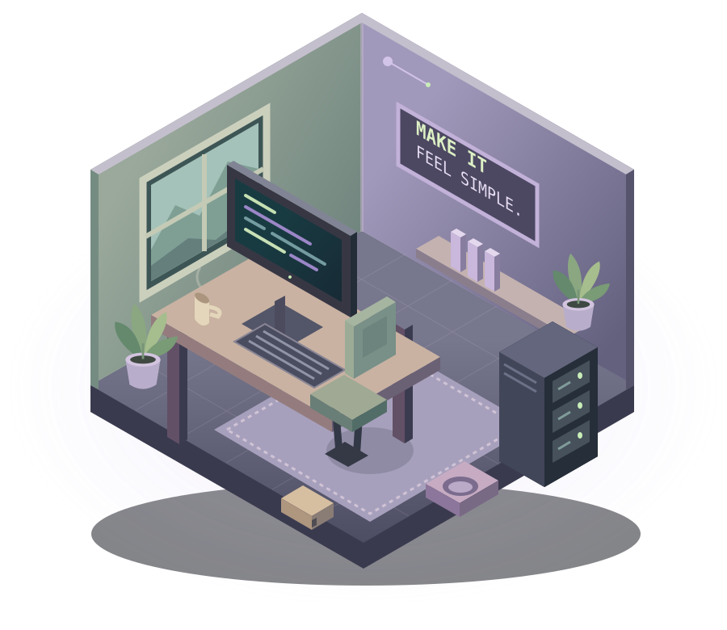

Good systems.
Happy humans.
A little curiosity.
Hi, I’m Owen. I connect the dots between
people, devices, and the modern workplace.
Systems & Infrastructure · Microsoft 365 · Endpoint Engineering

01 / WHAT I BRING
Behind every smooth day,
there’s thoughtful IT.
From the first device login to the systems behind an entire studio. Practical, secure, and built around people.
02 / OFF THE CLOCK, STILL CURIOUS
The projects.
A small piece of each app, ready to try.
Play, explore, and make something happen.
Interactive previews run right here. No account needed. Sample data stays in the preview.
03 / THE JOURNEY SO FAR
Experience that
connects the dots.
Hands-on operations across North America, Europe, and Asia. Root causes, clear documentation, and people first.
The full story on LinkedIn ↗Dankook University
Bachelor of Science, Computer Science and Psychology · Seoul, Korea
British Columbia Institute of Technology
Diploma, Automotive Technology · Burnaby, BC
A HUMAN BEHIND THE HELP DESK
Curious by nature.
Calm when it counts.
I keep the systems behind a company running — identity, devices, and the network — and I automate the parts that shouldn’t need a person.
I work in English, Korean, and Chinese. Away from IT operations, I build small apps and games, usually with Bomi and Seoli somewhere nearby.
Bomi
Chief nap officer
Seoli
Head of curiosity
OPEN TO THE NEXT CHAPTER
Let’s make work
work better.
owen.sykim@gmail.com ↗Systems administration · Endpoint engineering · Modern workplace
Infrastructure & technical analysis · Microsoft 365 + AI enablement